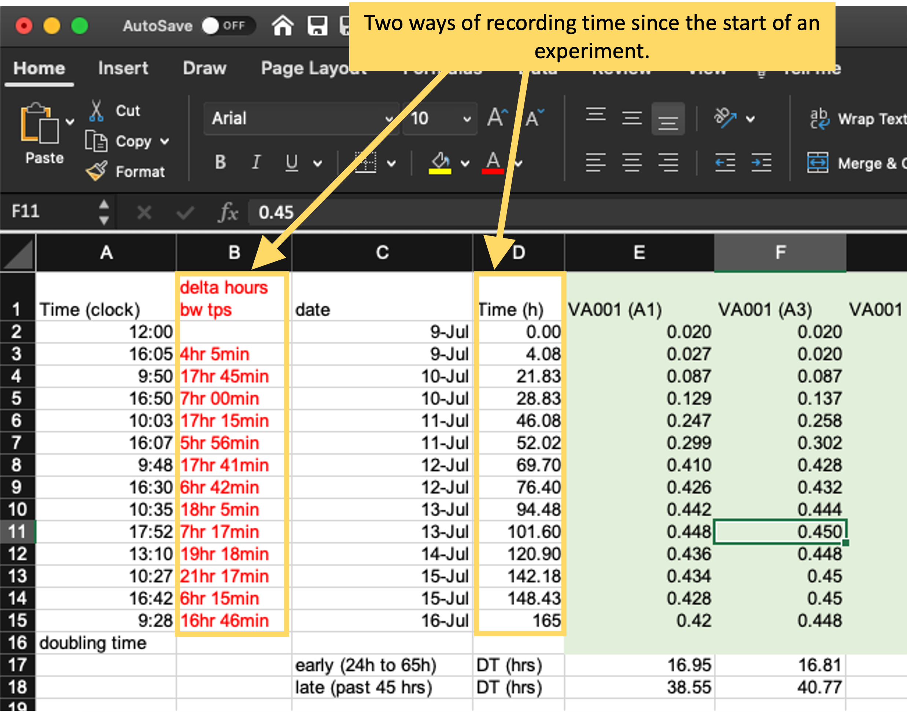

2.4 Designing templates for “tidy” data collection
This module will move from the principles of the “tidy” data format to the practical details of designing a “tidy” data format to use when collecting experimental data. We will describe common issues that prevent biomedical research datasets from being “tidy” and show how these issues can be avoided. We will also provide rubrics and a checklist to help determine if a data collection template complies with a “tidy” format.
Objectives. After this module, the trainee will be able to:
- Identify characteristics that keep a dataset from being “tidy”
- Convert data from an “untidy” to a “tidy” format
In this module, we will use a real example of data collected in a biomedical laboratory. We’ll use this example to show how data is often collected in a way that is not “tidy”, focusing on the features of data collection that make it “untidy”. We’ll then describe some general principles for why and how to instead create and use tidy (or at least tidier) templates to collect data in the laboratory, and show how this can be the first step in a pipeline to creating useful, attractive, and reproducible reports that describe the data you collected. This module will focus on the principles of templates for tidy data collection, while in the next module we’ll dig deeper into the details of making this conversion for the example dataset that we use as a demonstration in this module.
2.4.1 Example—Data on rate of bacterial growth
Throughout this module, we’ll use a real dataset to illustrate principles of data collection in a biomedical laboratory. First, let’s start by looking at the original data collection template, and use this to walk through some details of this dataset.
Figure 2.1 provides an annotated view of the data set, showing the format used when the data were originally collected:

Figure 2.1: Example of an Excel spreadsheet used to record and analyze data for a laboratory experiment. Annotations highlight where data is entered by hand, where calculations are done by hand, and where embedded Excel formulas are used. The figures are created automatically using values in a specified column.
These data were collected to measure the compare growth yield and doubling time of Mycobacterium tuberculosis (the bacteria that causes tuberculosis in humans) under two conditions—high oxygen and low oxygen. In humans, M. tuberculosis can persist for years or decades in granulomas, and the centers of these granulomas are often hypoxic (low in oxygen). Therefore, it’s important to understand how these bacteria grow in hypoxic conditions.
To conduct this experiment, the researchers used test tubes that were capped with sealed caps to prevent and air exchange between the contents of the tube and the environment. Inside the tubes, the amount of oxygen was controlled by shifting the ratio of the volume of the culture (the liquid with nutrients in which the M. tuberculosis will grow) versus the volume of air. In the high oxygen condition, a lower volume of culture was used, which leaves room for a lot of air in the top of the tube. In the low oxygen condition, the tube was filled almost to the top with culture, which left very little air at the top of the tube.
Once the tubes were filled and capped, they were left to grow for about a week. During this time, the researchers took several measurements to determine the growth of the bacteria in each tube. To do this, they used a spectrophotometer to track increases in optical density (absorbance at 600 nm) over time. This method gives a measurement of turbidity in each tube that is directly proportional to the cell mass in the tube, and so provides a measure of how much the bacteria has grown since the start of the experiment.
To record data from this experiment, researchers used the spreadsheet shown in Figure 2.1. This spreadsheet is an example of a data collection template—it was created not only for this experiment, but also for other experiments that this research group conducts to measure bacterial growth under different conditions. It was designed to allow a researcher working in the laboratory to record measurements over the course of the experiment. This specific spreadsheet allowed the researcher who was conducting the experiment to (1) calculate the amount of initial inoculum (cell culture) to add to each tube to begin the study, (2) record the raw data absorbance measurements, (3) graph the data on both a log and linear scale, and (4) calculate doubling time in two phases of growth using the equation listed above.
Let’s take a closer look at some of the features of this spreadsheet. First, it has a section on the top right that focuses on data collection during the experiment, with one row for each time when the tubes were measured for the cell mass within the tube. This section of the spreadsheet starts with several columns related to the time of each measurement, including the clock time at measurement (column A), the difference in time (hours) between each time point in which data were collected (column B), the date on which data were gathered (column C), and the time in hours for each data point from the start of the study for graphing purposes (column D). The columns for clock time (A) and date (C) were recorded by hand, while the columns for time since the start of the experiment (B and D) were calculated or converted by hand from these values and then entered in the column. The remaining columns (E–I) provide data on the optical density (absorbance at 600 nm), which is directly proportional to cell mass in the tube. There is one column per test tub, and each of these column labels includes a test tube ID (A1, A3, L1, L2, L3). If a tube ID starts with “A”, it was grown in high oxygen conditions, and if it starts with “L”, it was grown in low oxygen conditions.
Next, the spreadsheet has areas that provide summaries of the data, calculated using embedded formulas or through the spreadsheet’s plotting functions. For example, rows 17–18 provide calculations of the doubling time of the bacteria in each tube for two periods (early and late in the experiment), while two growth curves are plotted at the bottom of the spreadsheet.
Finally, the spreadsheet includes a couple of other features, including some written notes about one of the hand calculations and a macro in the top right that can be used by the researcher to calculate the amount of the initial inoculum to add to each tube at the start of the experiment.
What the researchers found appealing about the format of this spreadsheet was the ease with which the researcher collecting data in the laboratory could accomplish the study goals. They also cited transparency of the raw data and ease with which additional sampling data points could be added. The data being graphed in real time, and the inclusion of a simple macro to calculate doubling time, allowed the research in the laboratory to see tangible differences between the two assay conditions as data were collected over the one-week experiment.
However, many of these features can have undesired consequences. They can increase the chance of errors in recording the data and in calculating summaries based on the data. They also make it hard to move the data into a reproducible pipeline, and so limit opportunities for more sophisticated analysis and visualization. In the next section of this module, we’ll highlight features of data collection templates like this one that can make data collection “untidy”. In the section after that, we’ll discuss how you could create a new data collection template for this example data that would be tidier, and use this to open a more general discussion of principles of “tidy” data collection templates.
2.4.2 Features that make data collection templates “untidy”
There are several features of the data collection template shown in Figure 2.1 that make it “untidy”, in the sense of making it difficult to integrate the collected data in a data analysis pipeline that includes reading the data into a statistical program like R, Perl, or Python to conduct data analysis and visualization. There are also features that make it prone to errors in data collection and analysis.
First, these data will be hard to read into a statistical program from this spreadsheet because the raw data (the time points each observation was collected and the optical density for the sample at that time point) form only part of the spreadsheet (Figure 2.2, area highlighted by the blue box). The “extra” elements on the spreadsheet, which include the output from calculations, plots, macros, and notes, make it harder to isolate the raw data from the file when using a statistical program.

Figure 2.2: Isolating raw data collected in a template from extra elements. The box in this figure highlights the area of the spreadsheet where data are collected. All other elements of the spreadsheet focus on other aims (e.g., summarizing these data, adding notes, macros for experimental design). Those other elements make it difficult to extract the raw data for more advanced analysis and visualization through a statistical program like R, Python, or Perl.
While these extra elements make it hard to extract the raw data, it isn’t impossible. Programming languages like R include functions to read data in from a spreadsheet, and these functions often provide options to specify the sheet of the file to read in, as well as the rows and columns to read from a specific sheet. In the example spreadsheet in Figure 2.2, for example, you could specify to read in only rows 1–15 of columns A–I, to focus on the raw data. However, one goal of reproducible research is to create tools and pipelines that are robust—that is, ones that still work as desired when the raw data is changed in small ways, or even across different raw data files. In later modules, in fact, we’ll look at how we can use these principles to create tools that can be applied consistently across multiple studies to make data analysis of laboratory data both more efficient and reproducible. Therefore, while we could customize code to read in data from a specific part of a complex spreadsheet, like that shown in Figure 2.2, this customization would make the code less robust. If we asked the statistical program to read in rows 1–15 of columns A–I, for example, the code would perform incorrectly if we later added one more time point to the experiment, or if we tried to use the same template for an experiment that used more test tubes. If we instead use a template that only records the raw data, without additional elements, then we can create more robust tools, since we can write code to read in whatever is in a spreadsheet, rather than restricting to certain rows and columns. Any analysis, summaries, or visualizations that we’d like to perform on the raw data can be done through reproducible reports—which we’ll show an example of later for this example data—rather than directly in a spreadsheet.
Next, the example template helps demonstrate how specific ways of recording data can make the template less tidy. First, let’s look at how the template records the time of each measurement. It does this using four separate columns (Figure 2.2). In column C, the researcher records the date a measurement was taken, and in Column A he or she records the clock time of the measurement. The experiment was started, for example, at 12:00 PM (“12:00” in column A) on July 9 (“9-Jul” in column C). These values are entered by hand by the researcher. Next, these values are used to calculate, for each measurement, how long it had been since the start of the experiment. This value is recorded in two separate ways—as hours and minutes in column B and converted into hours and percents of hours (using decimals) in column D. For example, the second measurement was taken at 4:05 PM on July 9 (“16:05” in column A and “9-Jul” in column C), which is 4 hours and 5 minutes after the start of the experiment (“4hr 5min” in column B) or, since 5 minutes is about 8% of an hour, 4.08 hours after the start of the experiment (“4.08” in column D).
Figure 2.3: Measurements of time in the example data collection template. The four highlighted columns (columns A, B, C, and D) are all used in this spreadsheet to record time. The methods of recording time in this template, however, may make it more likely to create errors in data recording and collection and will make it harder to use the data in a reproducible pipeline.

There are a few things that could be changed about how the time data are recorded here that could make this data collection template tidier. First, it would be better to focus only on recording the raw data, rather than adding calculations based on that data. Columns B and D in Figure 2.2 are both the output from calculations. Anytime a spreadsheet includes a calculation, it creates the room for mistakes in data collection and analysis. Often, calculations in a spreadsheet will be done using embedded formulas. These can cause problems anytime new columns or rows are added to the data, as that can shift the cells meant to be used in the calculation. Further, these formulas are embedded in the spreadsheet, where they can’t be seen and checked very easily, which makes it easy to miss a typo or other error in the formula. In the example in Figure 2.2, columns B and D aren’t calculated by embedded formulas, but rather calculated by the researcher by hand and then entered. This can create the room for user error with each calculation and each data entry. Later, we’ll see how we can “tidy” this data collection template by removing columns that calculate time (columns B and D) and instead doing that calculation once the raw data are read into a statistical program.
The second thing that could be changed is how the template records the date and time of the measurement. Currently, it uses two columns (A and C) to record this information. However, each piece of information is useless without the other—instead, they must be known jointly to do things like calculate the time since the start of the experiment. It would therefore be tidier to record this information in a single column. For example, instead of recording the starting time of the experiment as “12:00” in column A and “9-Jul” in column C, you could record it as “July 9, 2019 12:00” in a single date-time column. In this example, adding the year (“2019”) to the date will also make this data point easier to work with in a programming language, as these often have special functions to work with data in date-time classes, but all elements of the date and/or time must be included to convert data points into these useful classes.
Next, let’s look at how the template collects data related to cell growth in each tube (columns E–I, Figure 2.4).

Figure 2.4: Measurements of bacterial growth in the example data collection template. The five highlighted columns (columns E–I) are all used in this spreadsheet to record optical density in each test tube at each measurement time.
These data are recorded in a format that will work pretty well. Strictly speaking, they aren’t fully “tidy” (module 2.3), since the column headers include information that we might want to use as variables in analysis and visualization. Specifically, each test tube’s ID is incorporated in the column name where measurements for that tube are recorded, since each test tube is recorded using a separate column. If we want to run analysis where we estimate values for each test tube, or create plots where each test tube’s measurements are shown with a separate line, then we’ll need to convert the format of the data a bit. However, that’s quite easy to do in more statistical programming languages now, and so it’s reasonable to compromise on this element of “tidiness” in the data collection format. As we’ll show in the next module, changing this layout in the original data collection would require the researcher to re-type the measurement date and time several times and would result in the spreadsheet being longer, and so harder to see at once when recording data. We’ll discuss this balance in designing data collection templates more in the next module, when we create a tidier version of this example data collection template.
There is a final element we’d like to highlight on this example template that could make the data hard to integrate into a reproducible pipeline. There are cases in the example template where either column names or cell values are formatted in a way that would be hard to work with when the data is read into a more advanced program like R or Python (Figure 2.5). For example, the column names include spaces and parentheses (e.g., “Time (clock)”). If left as-is, when the data are read into another program, the column names will need to be cleaned up to take these characters out, so that the column names are composed only of alphabetical characters, numbers, or underscores. While this can be done in code like R or Python, it will add to the data cleaning process and could be avoided by using simpler column names in the original data collection template. Similarly, in the example template there are recordings of time in a format that combines numbers with text indicators for units (e.g., “4hr 5min”). While these could be parsed in a programming language, it will take extra code and could be avoided with a better design for recording the data. Also, some of the data in the template is recorded in a format that Excel might try to automatically change into a date (e.g., “9-Jul”). Even if the value is a date, it is better to avoid formats that Excel automatically converts. Excel could, for example, convert the date incorrectly (e.g., convert “12/3/2020” to December 3, 2020, when it was meant to represent March 12, 2020). It is better to record the data in a format that will pass unchanged through to the file that you read in later coding and analysis.

Figure 2.5: Examples of special characters and formatting in the example template that could cause problems later in a data analysis pipeline.
2.4.3 Converting to a “tidier” format for data collection templates
Now that we’ve looked at characteristics that can make a data collection template “untidy”, let’s go through some principles for creating “tidy” templates to record the same data. There are three basic principles for designing “tidy” templates that will go a long way to creating ways to collect data in a research group that can be easily used within a reproducible analysis pipeline. These three principles are:
- Limit the template to the collection of data.
- Make sensible choices when dividing data collection into rows and columns.
- Avoid characters or formatting that will make it hard for a computer program to process the data.
The first principle in designing a tidier template for collecting laboratory data is to limit the template to the collection of data. The key here is the word “collection”. A tidy template will avoid any calculations done on the original data and instead focus only on the initial data that the researcher records for the experiment. This means that you should exclude from the template any element that provides a calculation, summary, or plot based on the initial recorded element. You should also exclude any special formatting that you are using to encode information. For example, say that you are collecting data, and in some cases you get a warning that the reading may be below the instrument’s detection limit. It may be tempting to highlight the cells with measurements where this warning was displayed as you record the data. However, you should avoid doing this, as any color or other formatting information will be lost when you read the data in the file into a statistical program. Instead, you could add a second column to indicate if the measurement included a warning.
The second principle is to make sensible choices when dividing data collection into rows and columns. There are many different ways that you could spread the data collection into rows and columns. One decision is how (and whether) to divide recorded information across columns. Figure 2.6, for example, shows several ways that you could divide data on a date and time into one or more columns. In this example, it typically makes the most sense to use a single column to record all the date and time elements (the top example in Figure 2.6). Most statistical programs have powerful functions for parsing dates and times, after which they store these data in special classes that allow time-related operations (for example, calculating the time difference between two date-time measurements). It will be most efficient to record all date and time elements in a single column.
Figure 2.6: Examples of special characters and formatting in the example template that could cause problems later in a data analysis pipeline.
Conversely if you have complex data with different elements
(for example, height in components of inches and feet), it may make
sense to use separate columns for each of the components. For
example, rather than using one column to record 5'7", you
could divide the information into one column with the component
that is in feet (5) and one with the component in inches (7).
In the first case, when you read the data into a program like
R you would need to use complex code to split the value into
its parts to be able to use it. In the second case, you could
easy work with the values in the two separate columns to calculate
a value to use in further work (e.g., use a formula like
height_ft * 12 + height_in to calculate the full height in inches).
Another decision at this stage is how “long” versus “wide” you make your template. A “wide” design will include more columns, while a “long” design will include more rows. Often, you can create different designs that allow you to collect the same values but with different designs on this wide-versus-long spectrum. Figure 2.7 gives two examples of templates that collect the same data, but one is using a wider design and the other is using a longer design.
Figure 2.7: Examples of two ways arranging the same data in a data recording template. The format on the left records the optical density measurements for each test tube in a separate column, and the column header identifies the test tube. This is an example of a ‘wider’ format. The format on the right records the optical density for all test tupbes in a single column, using a separate column to record which test tube the measurement represents. This is an example of a ‘longer’ format.
In module 2.3, we described the rules for the “tidy” format for dataframes. If you record data directly into a “tidy” format, it will be very easy to read into a programming language to analyze and visualize. However, this tidy format can sometimes result in datasets that are very long. It may be more convenient to record data into a wider format, especially if you are recording the data in a laboratory setting where it is inconvenient to scroll up and down within a longer-format file. Fortunately, there are some convenient tools in programs like R and Python that can be used to take data that are collected in a wider format and reformat them to the tidy format as soon as they are read into the software program. While this will require some extra code, it is usually code that is fairly simple and straightforward. Therefore, when you design your data collection template, you can balance any the pratical advantages of using a wider data collection format against the advantages of a fully “tidy” format that apply once your input the data into a statistical program for analysis and visualization. Often, the wider format might win out in this balance, and that’s fine.
The third principle is to avoid characters or formatting that will make it hard for a computer program to process the data. This principle is particularly important for the column names for each column. When you read data into a statistical program like R, these names will automatically be used as the column names in the R data frame object, and the code will regularly use these column names to refer to parts of the data when analyzing and visualizing it. You will find it easiest to use the data in a reproducible pipeline if you follow a couple rules for the column names. The reason that these rules will help is that they replicate the rules for naming objects in programming languages, and so will help in seamlessly transitioning between the stages of data collection and data analysis. First, always start a column name with a letter. Second, only use letters, numbers, or the underscore character (“_“) for the rest of the characters in the column name.
Based on these rules, then, you should avoid putting spaces in your column names when you design a data collection template. It is tempting to include spaces to make the names clearer for humans to read, and this is understandable. Often, using an underscore in place of a space can allow for easy human comprehension while still avoiding characters that are difficult for statistical programs. For example, if you have a column named “Optical density”, you can change it to “Optical_density” without making it much more difficult for a person to understand. As with other choices in designing a data collection template, these choices about column names can be a balance between making the template easy for researchers to use in the laboratory and easy for the statistical program to parse later in the pipeline. For example, statistical programs like R have functions for working with character strings that can be used to replace all the spaces in column names with another character. However, if it isn’t unreasonable to follow the recommended rules in writing column names for the data collection template, you can keep code later in the pipeline much simpler, so it’s worth considering.
Beyond spaces, there are a number of other special characters that you might be tempted to include in column names. These could include parentheses, dollar signs, percent signs, hash marks (“#”), and so on. Any of these will require extra code in later steps of an analysis pipeline, and some can cause more severe problems because they have special functionality in the programming language. For example, hash marks are used in the R programming language to add comments within code, while dollar signs are used for subsetting elements of a list or data frame object. It is worth the effort to avoid all these characters in column names in a data collection template.
There are also considerations you can make in terms of how you record data within cells of the data collection template, and these can make a big difference in terms of how hard or easy it is to work with the data within a statistical program. While statistical programs like R are very powerful in terms of being able to handle even very “messy” input data, they require a lot of code to leverage this power. By being thoughtful when you design the template to record the data, you can avoid having to use a lot of code to input and clean the data in later stages of the pipeline.
Figure 2.8 gives an example of a choice that you could make in the format you use to record data. This figure shows two columns from the original data collection template from the example experiment for this module. This template includes two columns that record the time since the start of the experiment, and they use different formats for doing this. In column B, time is recorded in hours and minutes, with the characters “hr” and “min” used to separate the two time components. In column D, the same information is recorded, but in decimals of hours (e.g., 4.08 hours for 4 hours and 5 minutes). While the format in column B is more similar to how humans think of time, it will take more code to parse in a statistical program. When reading this data into a program like R, you would need to use regular expressions to split apart the different elements and then recombine them into a format that the program understands. By contrast, the values recorded in column D could be easily read in by a statistical program, with minimal code needed before they could be used in analysis and visualizations.
Figure 2.8: Examples of two ways of recording time in the original template from the example experiment. Column B uses hours and minutes, with characters embedded to separate hours from minutes, while column D uses hours in decimal degrees. The format in column D will be much easier to integrate into a larger data analysis pipeline.
Finally, when you are designing the data collection template, you should try to avoid using formats that may be “auto-converted” by the spreadsheet program. For example, if you enter a value like “7-9-19” into a cell, the spreadsheet may try to automatically convert it to a date. Perhaps it is a date, but even if it is, the spreadsheet algorithm might make problematic assumptions in the conversion. For example, it might assume that “7-9-19” means July 9, 2019, when you meant for it to represent September 7, 1919. Further, there are cases where you might enter a value that is not a date, but that the spreadsheet thinks is based on its formatting. This was found to be a problem, for example, for some gene names. To avoid potential autoconversion by the spreadsheet, consider putting any character stings, including entries with dates and identifiers, inside quotation marks when you enter them in the spreadsheet program. The spreadsheet program will respect this as a sign to leave the entry as-is, rather than attempting automatic formatting into a date or other special class of data.
These three principles are an excellent starting point for designing a “tidy” template for collecting data. By using these, you will be well on your way to collecting data in a way that is easy to integrate in a longer reproducible data analysis pipeline. There are some additional steps that you could consider that can help make it easier to do clever and interesting things with your data once you read it into a statistical program.
For example, you could design column names and column entries so that you will be able to take advantage of statistical programming tools based on something called regular expressions. “Regular expressions” refers to patterns in character strings (which are just strings of one or more characters, like “aerated_1” or “mouseID”) that can be described and searched for using defined patterns. For example, take the following set of character strings: “aerated1”, “aerated3”, “low_oxygen1”, “low_oxygen2”, “low_oxygen3”. These strings current include two pieces of information. First, they give the growth condition, which is either “aerated” or “low_oxygen”. This information is given in each string using only alphabetical characters (e.g., a, b, c) and the underscore character. Next, the strings include information on the test tube of the sample for that condition—for example, “aerated1” indicates the first test tube under the aerated conditions. This test tube number is given using only numerical characters (e.g., 1, 2, 3). Since these pieces of information are encoded in the character strings using these patterns, you can use regular expressions in a program like R to isolate only the non-numeric part of each string (“aerated” versus “low_oxygen”) or only the number part (“1”, “2”, or “3”). This functionality can be a very powerful way to use column names and cell values to encode information that you can later separate or extract to use in things like adding color to plots based on certain conditions. In the next module, we’ll show an example of using regular expressions in this way to leverage information taken when collecting the data. When designing a tidy data collection template, it’s worthwhile to think of writing column names or otherwise recording data in a way that uses these types of regular patterns in a meaningful way.
When you convert data collection templates to “tidier” formats, they will typically look much simpler than the templates that your research group may have been using. In the example experiment that we described earlier in this module, this process of tidying the template results in a template like that shown in Figure 2.1 (in the next module, we’ll walk through all the steps to create this tidier template, using this principles we’ve covered in this module). By comparison, the starting template for data collection for this experiment is shown in Figure 2.1.

Figure 2.9: Example of an simpler format that can be used to record and analyze data for the same laboratory experiment as the previous figure. Annotations highlight where data is entered by hand. No calculations are conducted or figures created—these are all done later, using a code script.
By comparing these two templates, you can see that the simpler template does not, by itself, provide immediate, real-time summaries of the collected data. The simpler template has removed elements like plots and values calculated by embedded formulas. At first glance, this might seem like a disadvantage of using a tidier template to collect data. However, by combining other tools in a pipeline, it is easy to connect the tidier raw data file to reporting tools. In this way, you can quickly create real-time summaries of the data that are similar to those shown in Figure 2.1, but that are created and reported outside the file used to originally record the data.
Figure 2.10 shows an example of a simple report that could be created for the example experiment. This report is generated using a statistical program, R, which inputs the data from the simple template shown in Figure 2.9. The report then uses R code to generate a PDF or Word file with the output shown below. The file for this report is created in a way that the output can be quickly regenerated with a single button click, and so it can be applied to other data saved using the same template. In fact, you can create templates for reports that coordinate with each data collection template that you create. In the next module, we’ll walk through how you could create the generating file for this report, and in later modules (3.7–3.9), we provide a thorough overview of creating these types of “knitted” documents.

Figure 2.10: Examples of an automated report that can be created to quickly generate summaries and estimates of the data collected in the simplified data collection template for the example experiment.
The report shown in Figure 2.10 repeats some of the same summaries that were shown in the more complex original data collection template (Figure 2.1). There are a number of advantages, however, to using separate steps and files for the processes of collecting versus analyzing the data. The separate report (Figure 2.1) provides a starting point that can be easily adapted to make more complex figures and analysis, as well as to integrate the collected data with data measured in other ways for the experiment.
For example, take a look at the graph in the top left corner on the second page of the report shown in Figure 2.10. This figure shows the growth curve from the collected data, and it adds a shaded area to show the time range that was used to estimate doubling times for each sample. This provides a helpful quality check for this experiment. Bacterial growth goes through several phases, including an initial lag phase, an exponential growth phase (when the bacteria are regularly doubling), a stationary phase (when growth starts to slow down, because of exhaustion of nutrients or buildup of waste), and a dying phase. The doubling time should be calculated only during the exponential phase of growth, as the equation used to calculate it relies on describing growth during a period of regular doubling. When the growth curve is plotted with a log scale on the y-axis, the growth curve will look approximately linear in this exponential growth region. By including the plot on the top left of the second page in Figure 2.10, the researcher can quickly see that, in this experiment, the selected time range for calculating doubling time might not be appropriate—for the low oxygen condition, in particular, this time range looks like it included some measurements made during the transition into the stationary phase of growth. By quickly being able to assess this, the researcher can reassess whether a different time range should be use to calculate the doubling time for this experiment.
The report shown in Figure 2.10 provides results that are very similar to those calculated in the original spreadsheet, to show that you don’t need to give up fast and clear summaries and visuals if you simplify the template for collecting data. However, this report template could easily be made more sophisticated. For example, you could add code into the report that would perform quality control checks. In the example case, the cell growth is measured using optical density, and while this measure is proportional to cell density in many cases, the measurement can be prone to error once the optical density is very high. Therefore, you could, for example, add a check into the report to highlight any measures of optical density that are higher than a certain value.
2.4.4 Learning more about tidy data collection in the laboratory
It may take some iteration to develop the data collection templates that are both convenient and appropriate to input to more complex programs for pre-processing, analysis, and visualization. This module and the next module provide guidance and examples, but it can be helpful to see more examples. Two excellent resources on this topic are articles by Ellis and Leek (2018) and Broman and Woo (2018).